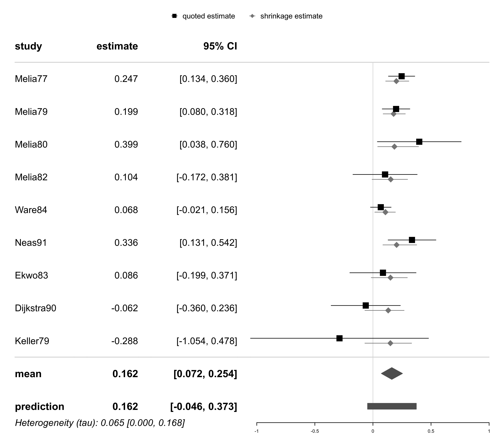
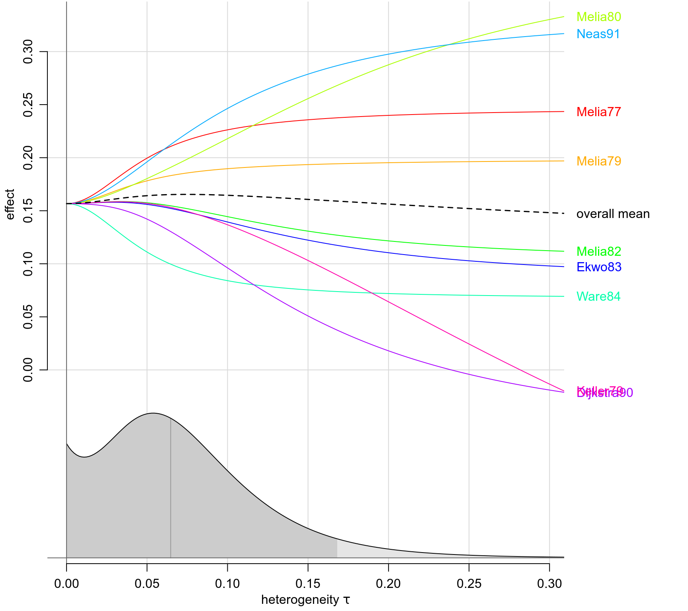
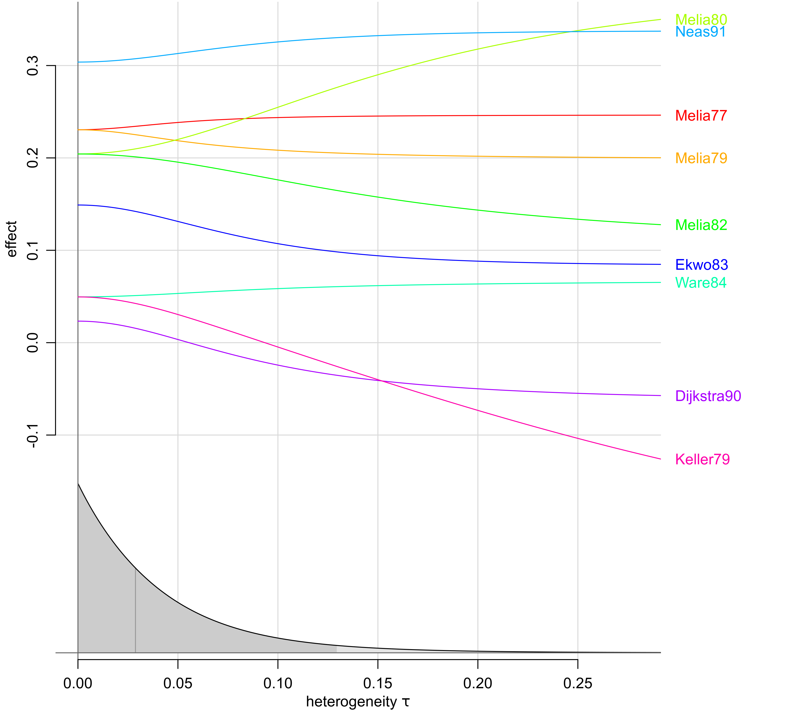

dat.dumouchel1994.RdNine studies investigating the effect of NO2 exposure on respiratory illness in children.
dat.dumouchel1994The data frame contains the following columns:
| study | character | study label |
| smoke | factor | adjustment for smoking (y/n) |
| no2 | factor | direct measurement of NO2 concentration (y/n) |
| gender | factor | adjustment for gender (y/n) |
| or | numeric | odds ratio for childhood respiratory illness |
| lower | numeric | lower bound of 95 percent CI |
| upper | numeric | upper bound of 95 percent CI |
Hasselblad et al. (1992) investigated the effects of nitrogen dioxide (NO2) exposure on the occurrence of respiratory illness in children. Their data were picked up by DuMouchel (1994) as an illustrative example in his article on Bayesian meta-analysis, and were also part of his “hblm” S-Plus software package. DuMouchel's dataset differs slightly from the figures quoted by Hasselblad et al. (1992), apparently because he had additional, more detailed data available.
The data set features three study-level covariables reflecting characteristics of the study designs, namely, whether the quoted estimate had been adjusted for parents' smoking status, whether NO2 exposure had been measured directly (or presence of a gas stove in the household had been used as a proxy instead), and whether the quoted effect had been adjusted for gender. Inclusion of the covariables allows to account for the studies' design features, quantify their effects, and adjust for these.
DuMouchel, W. H. (1994). Hierarchical Bayes linear models for meta-analysis. Technical Report 27, National Institute of Statistical Sciences (NISS); Research Triangle Park, NC, USA. https://www.niss.org/research/technical-reports/hierarchical-bayes-linear-models-meta-analysis-1994
Hasselblad, V., Eddy, D. M., & Kotchmar, D. J. (1992). Synthesis of environmental evidence: Nitrogen dioxide epidemiology studies. Journal of the Air and Waste Management Association, 42(5), 662–671. https://doi.org/10.1080/10473289.1992.10467018
medicine, odds ratios, meta-regression
# show data:
dat.dumouchel1994
#> study smoke no2 gender or lower upper
#> 1 Melia77 no no yes 1.28 1.14 1.43
#> 2 Melia79 no no yes 1.22 1.08 1.37
#> 3 Melia80 no yes yes 1.49 1.04 2.14
#> 4 Melia82 no yes yes 1.11 0.84 1.46
#> 5 Ware84 no no no 1.07 0.98 1.17
#> 6 Neas91 yes yes yes 1.40 1.14 1.72
#> 7 Ekwo83 yes no no 1.09 0.82 1.45
#> 8 Dijkstra90 no yes no 0.94 0.70 1.27
#> 9 Keller79 no no no 0.75 0.35 1.62
# derive effect sizes (log-ORs):
library(metafor)
no2 <- escalc(measure="OR", yi=log(or),
sei=(log(upper)-log(lower))/(2*qnorm(0.975)),
slab=study, data=dat.dumouchel1994)
summary(no2)
#>
#> study smoke no2 gender or lower upper yi vi sei zi pval ci.lb ci.ub
#> 1 Melia77 no no yes 1.28 1.14 1.43 0.2469 0.0033 0.0578 4.2695 <.0001 0.1335 0.3602
#> 2 Melia79 no no yes 1.22 1.08 1.37 0.1989 0.0037 0.0607 3.2772 0.0010 0.0799 0.3178
#> 3 Melia80 no yes yes 1.49 1.04 2.14 0.3988 0.0339 0.1841 2.1663 0.0303 0.0380 0.7596
#> 4 Melia82 no yes yes 1.11 0.84 1.46 0.1044 0.0199 0.1410 0.7400 0.4593 -0.1720 0.3808
#> 5 Ware84 no no no 1.07 0.98 1.17 0.0677 0.0020 0.0452 1.4967 0.1345 -0.0209 0.1563
#> 6 Neas91 yes yes yes 1.40 1.14 1.72 0.3365 0.0110 0.1049 3.2068 0.0013 0.1308 0.5421
#> 7 Ekwo83 yes no no 1.09 0.82 1.45 0.0862 0.0211 0.1454 0.5926 0.5534 -0.1988 0.3712
#> 8 Dijkstra90 no yes no 0.94 0.70 1.27 -0.0619 0.0231 0.1520 -0.4072 0.6839 -0.3597 0.2360
#> 9 Keller79 no no no 0.75 0.35 1.62 -0.2877 0.1528 0.3909 -0.7360 0.4617 -1.0538 0.4784
#>
# compute overall meta-analysis:
library(bayesmeta)
#> Loading required package: forestplot
#> Loading required package: grid
#> Loading required package: checkmate
#> Loading required package: abind
#> Loading required package: mvtnorm
#>
#> Attaching package: ‘bayesmeta’
#> The following object is masked from ‘package:stats’:
#>
#> convolve
bm01 <- bayesmeta(no2, tau.prior="DuMouchel")
# show results:
bm01
#> 'bayesmeta' object.
#>
#> 9 estimates:
#> Melia77, Melia79, Melia80, Melia82, Ware84, Neas91, Ekwo83, Dijkstra90, Keller79
#>
#> tau prior (proper):
#> DuMouchel prior
#>
#> mu prior (improper):
#> uniform(min=-Inf, max=Inf)
#>
#> ML and MAP estimates:
#> tau mu
#> ML joint 0.06501696 0.1652389
#> ML marginal 0.07833098 0.1614342
#> MAP joint 0.00000000 0.1566709
#> MAP marginal 0.05379867 0.1613962
#>
#> marginal posterior summary:
#> tau mu
#> mode 0.05379867 0.16139622
#> median 0.06468375 0.16220432
#> mean 0.07320351 0.16237119
#> sd 0.05141140 0.04540694
#> 95% lower 0.00000000 0.07230307
#> 95% upper 0.16817450 0.25433497
#>
#> (quoted intervals are shortest credible intervals.)
forestplot(bm01)

traceplot(bm01)

# perform meta-regression;
# specify regressor matrix:
X <- model.matrix( ~ smoke + no2 + gender, data=no2)
colnames(X) <- c("intercept", "smoke", "no2", "gender")
# perform regression:
bm02 <- bmr(no2, X=X, tau.prior="DuMouchel")
# show results:
bm02
#> 'bmr' object.
#>
#> 9 estimates:
#> Melia77, Melia79, Melia80, Melia82, Ware84, Neas91, Ekwo83, Dijkstra90, Keller79
#>
#> 4 regression parameters:
#> intercept, smoke, no2, gender
#>
#> tau prior (proper):
#> DuMouchel prior
#>
#> beta prior: (improper) uniform
#>
#> MAP estimates:
#> tau intercept smoke no2 gender
#> joint 0 0.04953994 0.09955415 -0.02627344 0.1809562
#> marginal 0 0.04529170 0.10031227 -0.02546997 0.1862744
#>
#> marginal posterior summary:
#> tau intercept smoke no2 gender
#> mode 0.00000000 0.04529170 0.1003123 -0.02546997 0.18627439
#> median 0.02876977 0.04140935 0.1005924 -0.02510083 0.19031411
#> mean 0.04265608 0.03751861 0.1008461 -0.02474112 0.19410424
#> sd 0.04578384 0.06421741 0.1135835 0.09736343 0.08028811
#> 95% lower 0.00000000 -0.09126973 -0.1210495 -0.21483758 0.04033739
#> 95% upper 0.12945431 0.15924345 0.3227122 0.16525866 0.35335461
#>
#> (quoted intervals are shortest credible intervals.)
forestplot(bm02)
#forestplot(bm02, xlab="log-OR",
# X.mean=rbind("none" = c(1,0,0,0),
# "smoke" = c(1,1,0,0),
# "no2" = c(1,0,1,0),
# "gender" = c(1,0,0,1),
# "all three" = c(1,1,1,1)))
traceplot(bm02)
